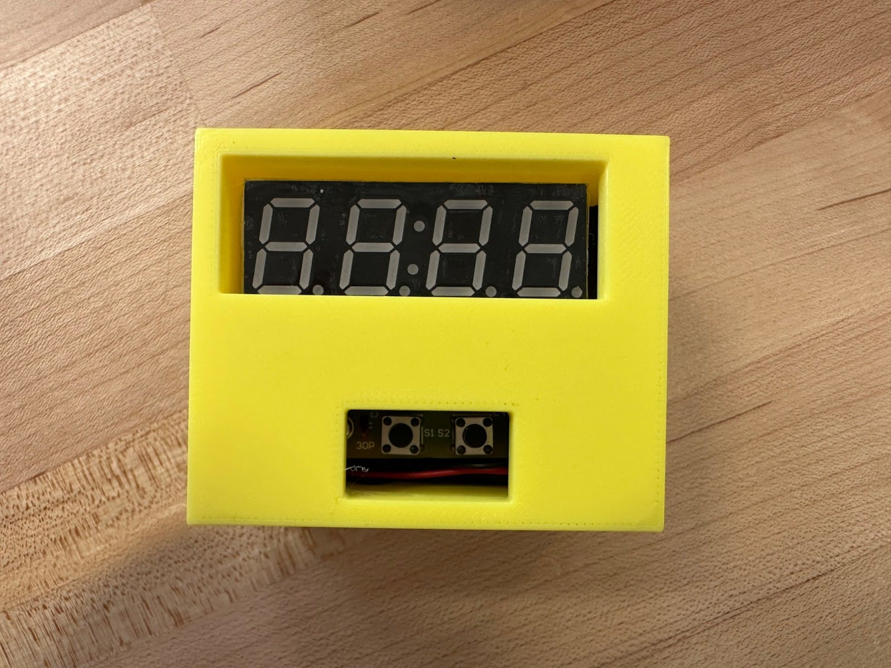

First 3D Print
After soldering and assembling the clock, we took measurements the dimensions of the clock and began modeling in Fusion. We put this model into Prusa Slicer and printed the box, and stopped the print early in order to assess if the box would work. It resulted in a box far too small to fit the clock. This was likely due to a mixture of user error when measuring, as well as not considering contraction of the plastic when it cools.
Second 3D Print
Taking into account the shortcomings of our previous print, we remeasured the dimensions of the clock, as well as increasing those dimensions further to account for contractions and printing errors. We printed this box, which fit the width and length of the clock, but was too short to close the clock in, as can be seen in the final image.

Third 3D Print
For the final print, we used the same roof because the length and width were not changed, and simply increased the height of the box. This final print was succesful, and the box held the clock well. The trial and error of these prints gave meaningful insight into looking into the fine details and assuring measurements multiple times.
First Laser Cut
After going through the tutorials, we modeled our laser cut in Fusion. This process demonstrated how there is often multiple ways to accomplish a task, and it is important to find what works best for you. We ended up using rectangular patterns to create our fingers, while the tutorial given showed an alternate way. After modeling, we exported the files and laser cut the pieces. The box fit together successfully, but was too small to fit the clock. This was because while we used the correct measurements, we did not consider the thickness of the wood as part of the measurements, meaning each dimension was too short by the thickness of the wood.
Second Laser Cut
For the second cut, we increased the dimensions by the thickness of the wood, as well as increasing the dimensions a little more to assure the clock will fit in the box. We also put holes for the buttons and display of the clock. We cut this box, and it fit the clock well. We hot glued this cut together to assemble, and our final product was a success.